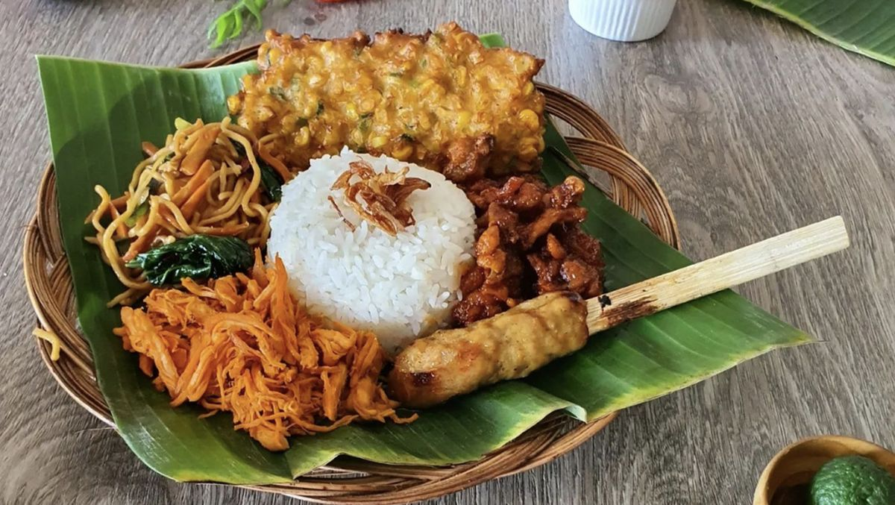
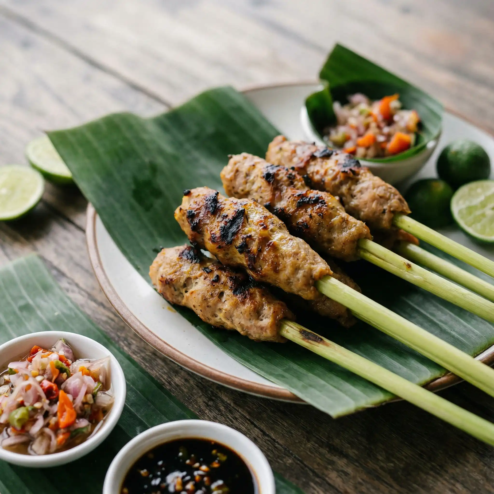
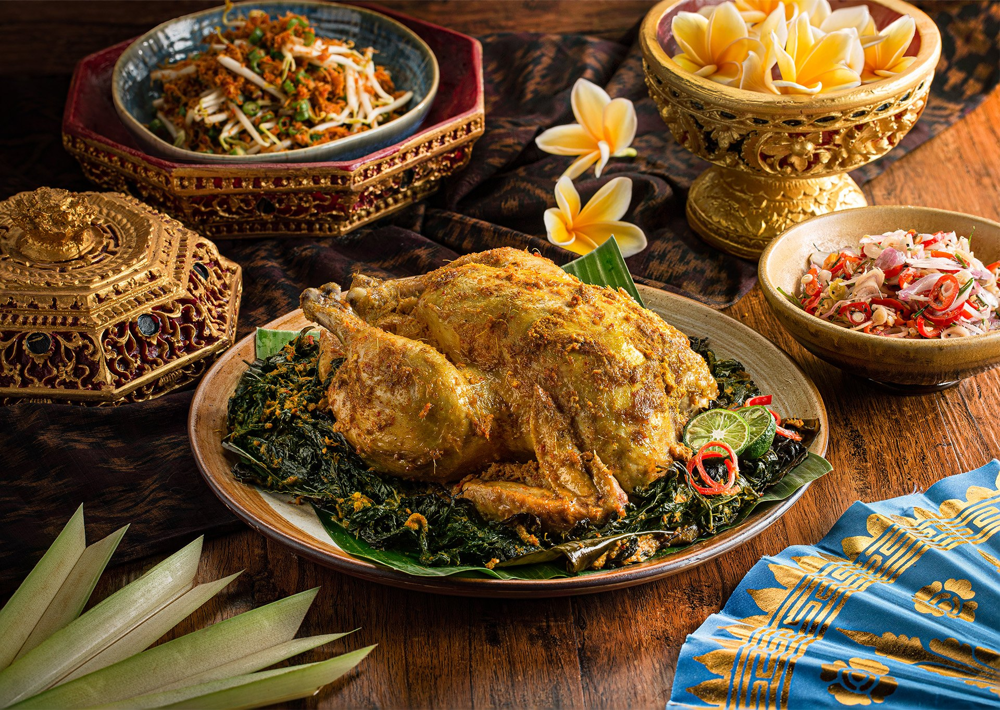

01 / EVERYDAY FAVORITE
Nasi campur Bali
A little bit of everything: rice with vegetables, sambal, savory meat, and flavorful side dishes in one satisfying plate.
Local food / Gianyar, Bali
In Gianyar, food is more than something to eat. It is a reason to gather, a recipe passed between generations, and a warm welcome served on a plate.
Explore the dishes
What to try first

A little bit of everything: rice with vegetables, sambal, savory meat, and flavorful side dishes in one satisfying plate.

Minced meat is mixed with coconut and fragrant spices, then wrapped around a bamboo stick before it meets the grill.

Duck is rubbed with a deep spice paste and cooked slowly until tender, aromatic, and rich with Balinese flavor.
A local ritual
The best meals are rarely rushed. Pull up a chair, add sambal, and let the conversation take its time.
Small tip: Visit local warungs around lunchtime for the freshest dishes and the most authentic everyday experience.